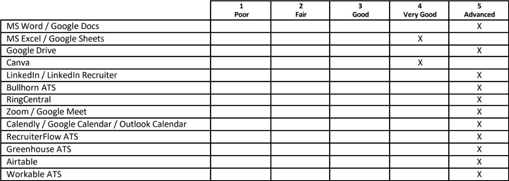

Hazel Doncillo
About Me Contact Me
Objective
As a highly motivated technical recruiter with a proven track record of successful talent acquisition and retention, my
objective is to leverage my expertise in sourcing, screening, and onboarding top-tier technical talent to support the
organizational growth and innovation of a forward-thinking company seeking a dynamic, results-driven recruiting
professional.
Work Experience
-
October 2023 to present
- Perform full-cycle recruitment candidates
- Conduct thorough candidate screening and assessment, including resume review, phone interviews, and technical evaluation
- Coordinate and schedule interview, handle interview feedback, and coordinating with other recruiters and account managers to understand client needs and provide ongoing support in the recruitment process
October 2021 to Oct 2023
- Locate and engage passive and open-to-work candidates through the use of LinkedIn Recruiter, Boolean sourcing, and alternative search techniques
- Posting technical job descriptions with the use of the CRM (Bullhorn & RecruiterFlow)
- Perform pre-screening calls to analyze applicants abilities, interests, behavior, and salary requirements
- Coordinate with IT team leaders and clients to forecast department goals and hiring needs
April 2020 to October 2021
- Cold Caller
- Reaching out to small business owners and offering virtual assistance service
- Social Media Manager
- Handled social media platforms such as Facebook Marketplace, Facebook messages, Craigslist, Offer Up, Google My Business, and other product posting and promotions
- Answered live calls, emails, and Facebook messages for inquiries
- Setting up an appointment
July 2020 to July 2021
- Reached out to potential business investors and allowed them to grow and start their own businesses in the financial field
- Set up an appointment on behalf of the client with potential business investors interested in joining
- Following up with the potential investors via text messages or email
- Took care of the client's data sheets and other confidential files
Wanfang Technology
| |Operations AnalystSeptember 2019 to June 2020
- Handled administrative tasks which required multitasking using 3 computer monitors
- Monitored live gaming events for up to 6 games all at the same time while searching, doing data entry, and creating reports
Optum | Talent Acquisition Specialist
March 2019 to September 2019
- Assessed candidate’s information including resumes and other personal information in the company’s applicant tracking system (Taleo)
- Screened applicants, conducted assessments, and interviews
June 2018 to March 2019
- Assisted ADP clients in processing their employee’s payroll
- Kept track of the employer’s and employee’s taxes reports and benefits
- Handled customer’s food orders and concerns, communicate with the restaurant and delivery rider on behalf of the customers, and answered live calls, emails, and chat
- Responsible for providing compensation to customers who have an issue with the order
Education
2014-2018 | Cavite State University
Bachelor of Science in Business Management major in Financial Management
Skills
- Use Microsoft Office applications and Google Apps to create documents and files
- Data entry
- Written and verbal communication skills
- Customer Relationship Management software experience
- Applicant tracking software experience
- The ability to analyze a person and a situation perfectly
- Excellent interpersonal skills
- Screening Resumes
- Candidate Interviews
- Boolean Searching
- Candidate Management
- Technical Recruitment
Tools
